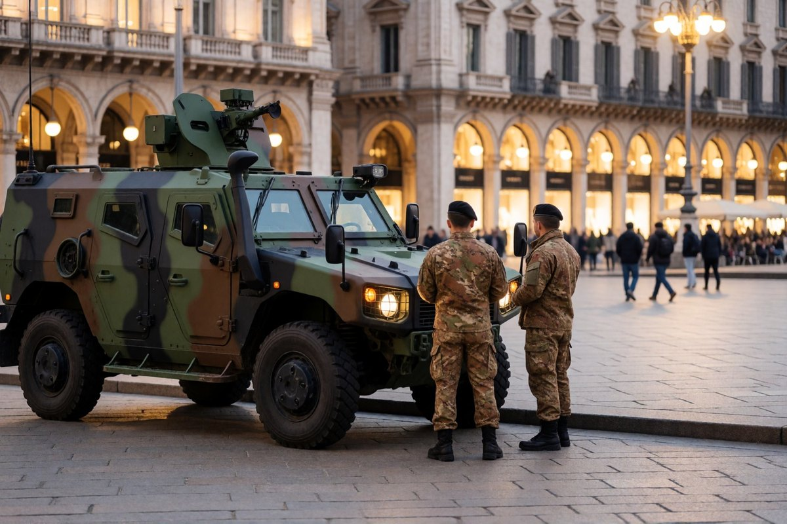
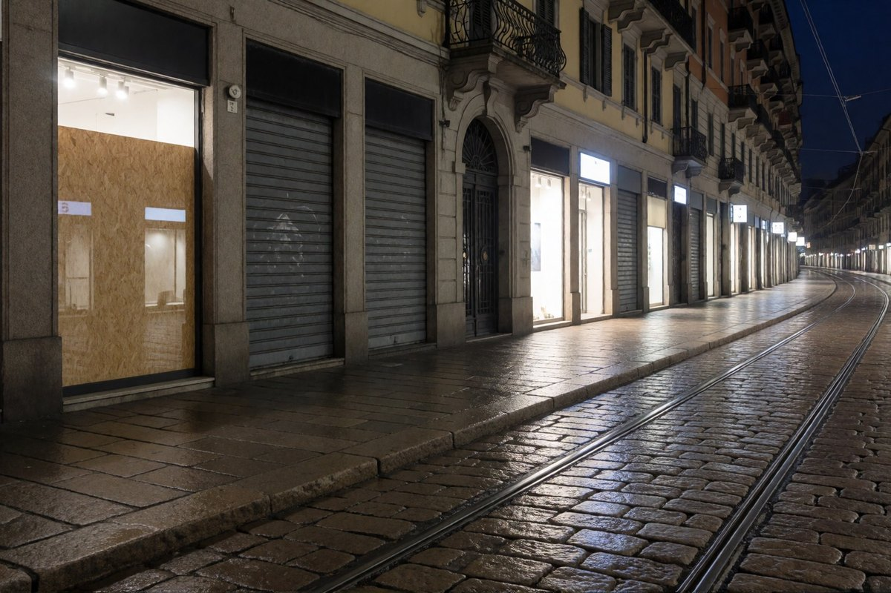

Politica italiana · 13 novembre 2026
I militari nelle piazze di Milano: emergenza o risposta all'emergenza?
Un commento del Giornale accusa la sinistra milanese di avere paura delle divise. L'editoriale per gli abbonati, con il commento dell'autore: i soldati non sono una soluzione, ma intanto la piazza qualcuno la deve presidiare.
di Franco Zanghì
Dopo i disordini del 17 e del 18 ottobre 2026 nel centro di Milano, il governo ha mandato in città 500 militari, fra cui i paracadutisti della Folgore. La loro presenza è stata prorogata fino al 31 marzo 2027, con 6,1 milioni di euro previsti nella legge di bilancio.
A Mario Calabresi, giornalista e candidato alle primarie del centrosinistra per il dopo Sala, questa presenza non piace: sui social ha scritto che Milano non ha bisogno di essere militarizzata, che all'Esercito si dice grazie, ma che con quei soldi il governo dovrebbe mandare agenti di polizia stabili ed educatori. Sulla stessa linea Pierfrancesco Majorino, capogruppo del Partito democratico in Regione Lombardia.
La tesi del Giornale
Il Giornale ha risposto l'11 novembre con un commento di Paola Fucilieri intitolato «La solita sinistra che ha paura delle divise». Fucilieri parte da una scena: tre blindati e venti soldati in piazza San Babila, che per Calabresi danno «un'immagine di emergenza e di allarme». La sua tesi è che una certa sinistra milanese ami la sicurezza come argomento da convegno e la rifiuti quando diventa concreta, con un mezzo militare parcheggiato in piazza. Per lei i soldati sono il presidio più mite che si possa immaginare: si fanno vedere, scoraggiano, e fanno sentire meno sola chi esce dalla metropolitana la sera. «I blindati non sono la causa dell'emergenza: ne sono la ricevuta».

Il commento
Su questo sono d'accordo con lei. I militari nelle strade italiane non sono un'invenzione di questo governo: l'operazione Strade sicure va avanti dal 2008 e nessun governo di centrosinistra l'ha mai chiusa.
Però voglio essere giusto con Calabresi, perché su una cosa ha ragione: i militari non sono una soluzione. Non fanno indagini, non conoscono i quartieri, e prima o poi se ne vanno. La sicurezza vera la fanno i poliziotti e i carabinieri che restano sul territorio per anni, e la fanno anche le scuole e gli educatori che tolgono ai ragazzi la voglia di spaccare vetrine.

Il punto
Solo che la sicurezza vera richiede tempo, e nel frattempo, fino a marzo, qualcuno la piazza la deve presidiare. È la domanda che fa anche Fucilieri, e alla quale Calabresi non risponde. Quindi il punto non è scegliere fra i soldati e gli educatori: è non trasformare i soldati in un argomento di campagna elettorale. Toglierli per far sembrare Milano normale, scrive Fucilieri, «è come buttare il termometro per far passare la febbre».
Aggiungo una cosa sola: anche lasciarli per sempre, senza costruire nient'altro, sarebbe un modo di abituarsi alla febbre.
Fonti
- il Giornale, Paola Fucilieri, «La solita sinistra che ha paura delle divise», 11 novembre 2026
- il Post, «Il governo vuole tenere i 500 soldati a Milano fino a marzo», 31 ottobre 2026
- il Giorno, sulle posizioni di Mario Calabresi e Pierfrancesco Majorino
Questo articolo è la versione scritta dell'editoriale riservato agli abbonati del canale Franco Zanghì, uscito il 13 novembre 2026. Le tesi attribuite a Paola Fucilieri sono quelle del suo commento sul Giornale dell'11 novembre 2026; il commento finale è dell'autore.